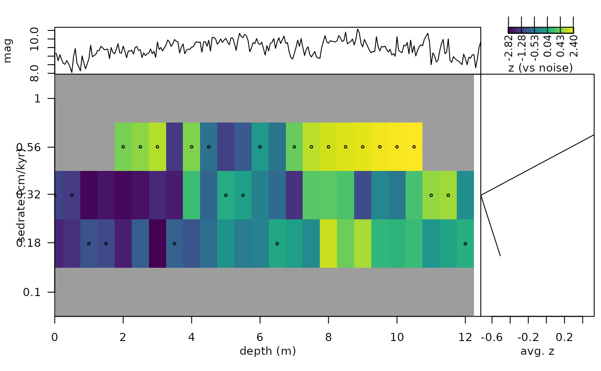

plot the windowed timeOpt sedimentation rate estimation
Source:R/plot_win_timeopt.R
plot_win_timeOpt.RdThe plot_win_timeOpt function plots a windowed
timeOpt sedimentation rate estimation of win_timeOpt.
Usage
plot_win_timeOpt(
win_timeOpt_result = NULL,
proxy_name = NULL,
abline_h = NULL,
abline_v = NULL,
add_lines = NULL,
fig_lts = NULL,
xlab = "depth (m)",
ylab = "sedrate (cm/kyr)",
sel_parameter = 3,
n.levels = 100,
corrected = TRUE,
show_untestable = TRUE,
show_best = TRUE
)Arguments
- win_timeOpt_result
Result to plot (required): the list returned by
win_timeOpt.Default=NULL.- proxy_name
Label of the y-axis of the proxy panel on top (character, e.g.
"magnetic susceptibility");NULLleaves it empty.Default=NULL.- abline_h
Sedimentation rates at which dashed horizontal lines are drawn on the map, in the units of
win_timeOpt_result$sedrate(numeric vector, e.g.c(2, 3, 5), orNULLfor none).Default=NULL.- abline_v
Depths at which dashed vertical lines are drawn on the map, in the depth unit of the record (numeric vector or
NULLfor none).Default=NULL.- add_lines
Lines to draw on the map, e.g. a sedimentation rate curve (matrix or data frame, or
NULLfor none): depth in column 1 and one or more columns of sedimentation rates after it; each column is drawn as a separate line.Default=NULL.- fig_lts
Text (e.g. a figure letter such as
"A") written in large type in the upper left corner of the proxy panel (character, orNULLfor none).Default=NULL.- xlab
Label of the depth axis (character).
Default="depth (m)".- ylab
Label of the sedimentation rate axis (character).
Default="sedrate (cm/kyr)".- sel_parameter
Which timeOpt fit to plot (integer):
1envelope fit,2spectral power fit,3combined fit (opt).Default=3.- n.levels
Number of colour levels of the map (integer, > 1); the breaks are quantiles of the plotted values.
Default=100.- corrected
Plot the bias-corrected z-scores (
z_envelope,z_power,z_opt) instead of the raw r-squared values, when the result contains them (bias_correction = "null"inwin_timeOpt) (logical). The median z threshold is then drawn as a dotted line on the average panel.Default=TRUE.- show_untestable
Grey out the cells that cannot be tested (too few samples per cycle, too few cycles in the window or window outside the record), as flagged in
testableof the result (logical).Default=TRUE.- show_best
Mark the best sedimentation rate of every window (logical); filled symbols are significant at the family-wise level of
win_timeOpt, open symbols are not.Default=TRUE.
References
Meyers, S.R. (2019). Cyclostratigraphy and the problem of astrochronologic testing. Earth-Science Reviews 190, 190-223 <doi:10.1016/j.earscirev.2018.11.015>
Author
Based on the eTimeOpt
function of the 'astrochron' R package.
Examples
# \donttest{
#plot the windowed timeOpt of the magnetic susceptibility record
#of the Sullivan core of Pas et al., (2018).
set.seed(1)
mag_win_timeOpt <-win_timeOpt(
data = mag[1:250, ],
window_size = 6,
sedmin = 0.1,
sedmax = 1,
numsed = 5,
limit = FALSE,
fit = 2,
fitModPwr = TRUE,
flow = NULL,
fhigh = NULL,
roll = 10 ^ 6,
targetE = c(405.7, 130.7, 123.8, 98.9, 94.9),
targetP = c(20.9, 19.9, 17.1, 17.2),
detrend = TRUE,
normalize =TRUE,
linLog = 1,
bias_correction = "null",
n_null = 6,
noise_model = "ar1",
step = 10,
run_multicore = FALSE,
verbose=FALSE)
plot_win_timeOpt(win_timeOpt_result = mag_win_timeOpt,
proxy_name= "mag",
abline_h=NULL,
abline_v = NULL,
add_lines=NULL,
fig_lts = NULL,
xlab="depth (m)",
ylab= "sedrate (cm/kyr)",
sel_parameter=3,
n.levels=100,
corrected = TRUE)


# }